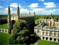
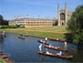

Department of Genetics Centenary Symposium
A one-day symposium celebrating advances in genetics Register now!
The event
Exactly one hundred years ago, the first Chair in Genetics in the world - the Balfour Professorship - was established here in Cambridge. In the century that ensued, the professorship was, among others, held by Reginald Punnett, who co-discovered genetic linkage, and Ronald A. Fisher - hailed as "the father of modern statistics and experimental design". The Balfour Professors both contributed to the cutting edge of genetics research themselves, and inspired many to pursue the same path.
To celebrate this important anniversary, a one day symposium organised by the Department of Genetics is taking place on the 7th September 2012, with related informal events happening throughout the weekend. The speakers include former students and staff members who have since gone on to trail-blaze in their respective areas of genetics, often crediting their passion for genetics to the inspiration gained during time spent in the Genetics Department.
Unique in both the breadth and the impact of the science presented, this symposium takes us on a whirlwind tour of cutting edge biology research, including population genetics, ES cells, cell cycle regulation, epigenetics, cell signaling, cell polarity and cancer research.
The Venue
Cambridge, UK
The symposium is taking place on Friday 7th Sept 2012, at
Churchill College, Cambridge.
Find out more about
the location, or register now.
- 
- 
Speakers
Meet the line-up
We have distinguished alumni speakers from a number of areas of genetics, reflecting the wide range of research in the department throughout its history.
For further details, see our Speakers page.
- William Bateson
- Ronald A. Fisher
- Reginald Punnett